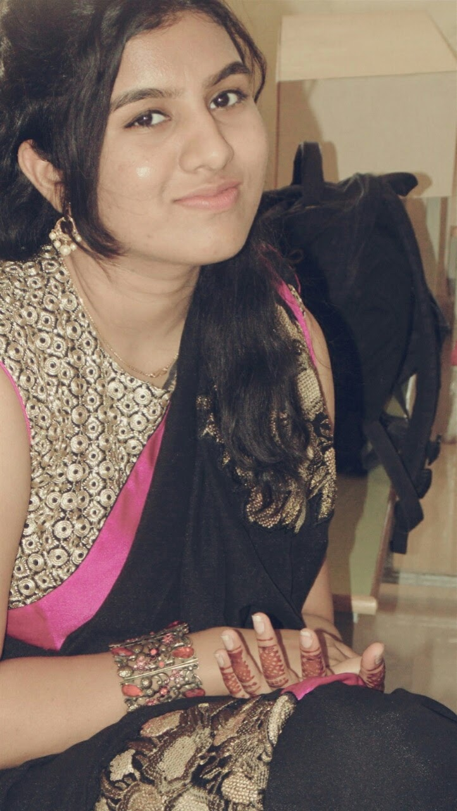
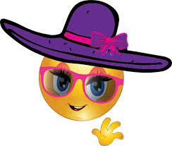

Hi, I am Alekya Venkatapuram.
I am a senior year undergrad student at Umass Lowell,studying Computer Science.
I am from Hyderabad,India.
I am a tranfer student from India and i have come here to complete my bachelors in CS in the senior year.
The experience of education at umass lowell has been very different and enjoyable and I'm happy to be part of this uniersity.
My interests
I love reading novels
I enjoy cooking new cuisines
I love fashion designing and like to pursue it as a hobby
Playing Badminton is my all time favourite pass time